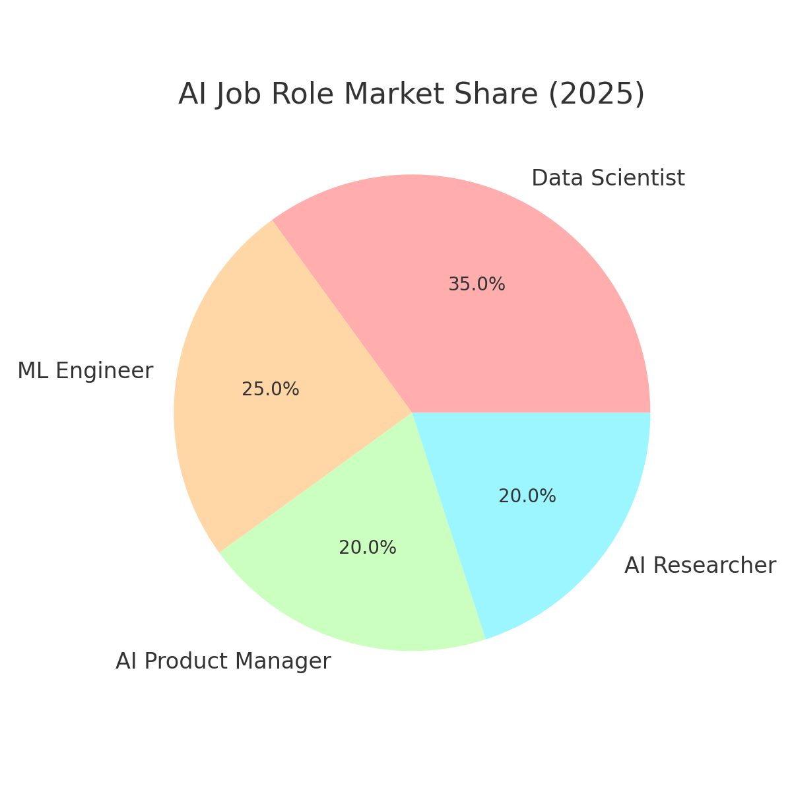
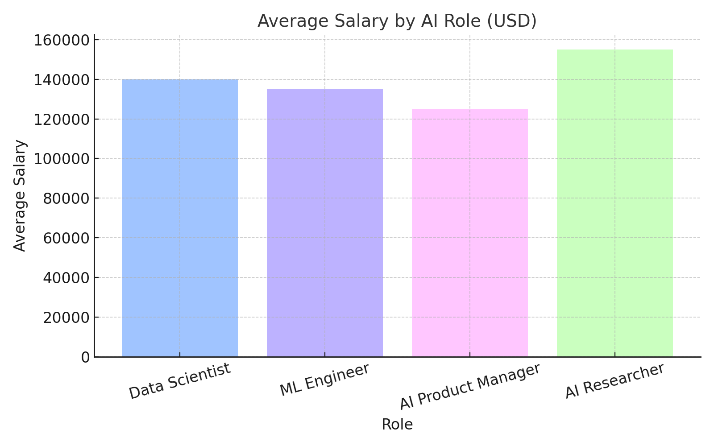

Stay ahead of the curve by understanding how AI job roles are evolving across industries in 2025. Explore job market share, salary trends, and the career evolution flow!
AI Job Role Market Share

Average Salaries (USD)

🚀 AI Career Flowchart
Start with foundational skills (Math, Programming)